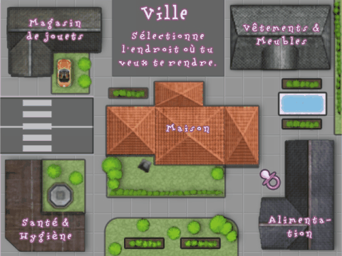
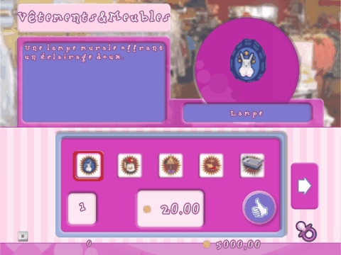

10 |
La carte de la ville |
 |
|
Il est temps d'aller faire quelques courses ! Réfléchis à ce dont tu as besoin, puis sélectionne le magasin qui convient.

Magasins Il y a quatre magasins en ville : Magasin de jouets Rends-toi dans le magasin de jouets afin d'acquérir des objets qui amuseront ton bébé. Ainsi, il ne s'ennuiera jamais dans le jardin, ni dans la salle de jeu!
Magasin Vêtements & Meubles Dans ce magasin, tu trouveras des meubles, des vêtements et des accessoires pour ton bébé.
Magasin Santé & Hygiène Ce magasin fournit des articles tels que des savons et des crèmes qui sont indispensables pour l'hygiène et la santé de ton bébé.
Magasin d'alimentation Si tu as besoin de nourriture pour bébé, va dans ce magasin afin d'acheter du lait ou tout autre ingrédient nécessaire à la concoction de bons petits plats!

Une fois dans un magasin, utilise les flèches gauche et droite pour naviguer entre les articles disponibles. Lorsque tu as choisi un article, utilise les flèches haut et bas pour en définir la quantité. Pour acheter l'article, positionne le curseur sur l'icône Pouce levé et appuie sur le bouton A.
Vérifie que tu as assez d'argent pour acheter les articles que tu as choisis ! Une fois tes courses terminées, appuie sur le bouton B pour revenir à la carte de la ville.
|
 |
 |
 |